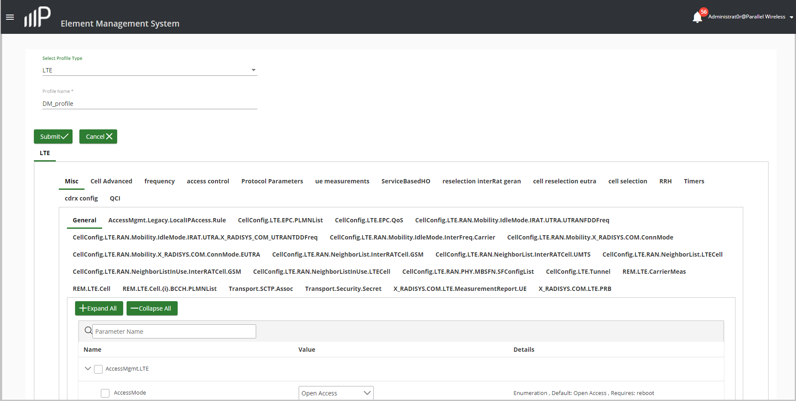

Create a New Profile on the PW EMS
Use this task to start creating a new GSM (2G) or LTE (4G) profile on the PW EMS from the beginning (greenfield).
- In the navigation bar, click Profiles > Summary.
- In the Profiles window, click +Create.
- In the window that appears, select GSM for a 2G profile or LTE for a 4G profile.
- Enter the required name in the Profile Name field with no spaces.
-
Select from the various configuration menu options such as Misc, Cell
Advanced, and so on (if you are configuring an LTE profile) to start
configuring your profile. You can also search for a specific parameter to
configure, by entering a known TR-69 parameter name in the Parameter Name
field. The following window appears for configuring a new profile. In this
example, General parameters are being modified for Misc
(miscellaneous) group of your LTE profile parameters.

- When you are finished making changes to your profile, click Submit. The new profile appears in the Profiles window, and can be assigned and used by devices on the system.